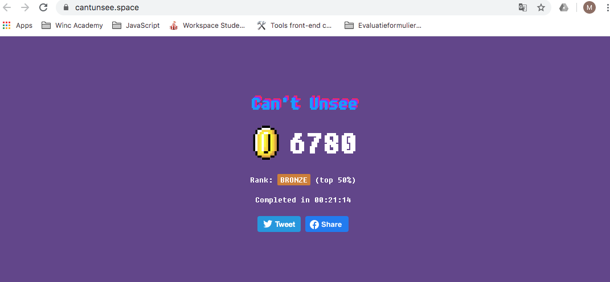

Ik heb veel geleerd van deze game, maar soms is het gewoon een kwestie van smaak. En een enkele zie je pas wanneer je beide designs over elkaar heen legt. Dit was mijn score:
Waar moet je beginnen bij deze website? Eigenlijk alles eraan is zo fout. Zo'n mengelmoes van kleuren, fonts en nutteloze niets toevoegende bewegende afbeeldingen.